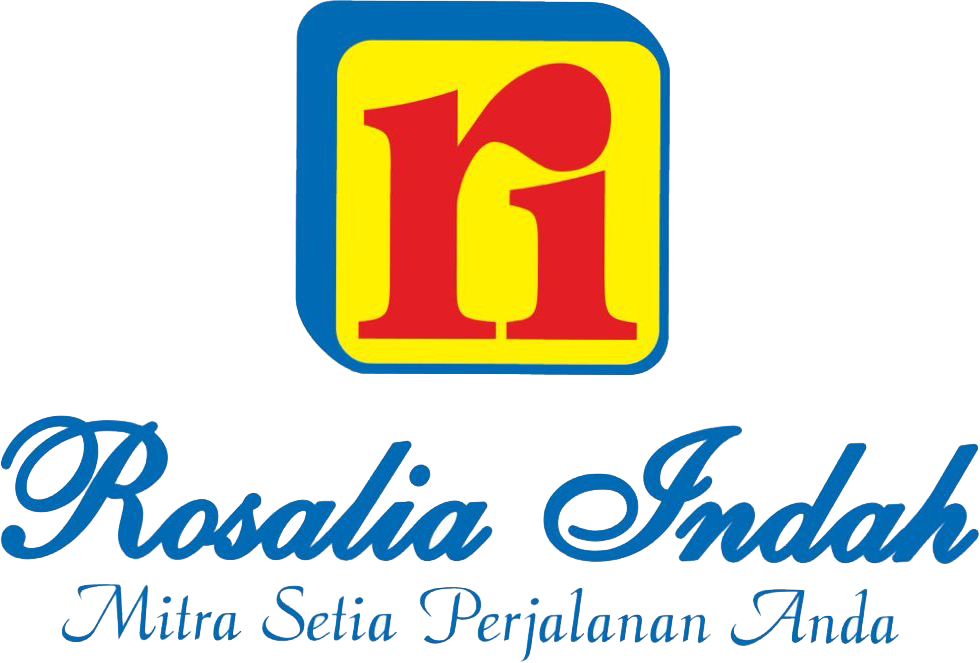
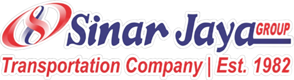
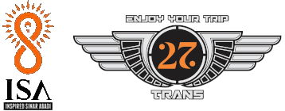

Perjalanan Bus Tol Trans-Jawa, Tanpa Drama Ngetem.
Pilih perjalanan bus AKAP dengan konteks yang lebih jelas dari Jakarta menuju Semarang, Solo, Surabaya, dan Malang. Rekomendasi ini memakai jadwal terkurasi dan telemetri operasional simulasi, sehingga Anda dapat membandingkan ketepatan waktu, kenyamanan, dan pola keberangkatan tanpa klaim data lapangan.
RUTE PERJALANAN
Mulai dari rutenya.
Rekomendasi akan diurutkan dari data jadwal referensi dan prioritas Anda.
Jadwal referensi tersedia
Prioritas Perjalanan:
Jam Keberangkatan:
Tiket Rekomendasi Sesuai Pilihan Anda
Format boarding pass dengan informasi jadwal referensi, waktu tiba, fasilitas kursi, dan ringkasan pengalaman penumpang yang diberi label sesuai sumbernya.
Operator Bus AKAP dalam Dataset Referensi
Profil operator yang tersedia di dataset referensi dan digunakan sebagai konteks perbandingan simulasi perjalanan.

PO Rosalia Indah
Palur, Solo • Sejak 1983
Pionir Double Decker & First Class Sleeper bus di koridor Solo dan Madiun. Memiliki fasilitas Rest Area Eksklusif KM 379 B dan RM Rosalia Indah dengan waktu makan disiplin.
PO Harapan Jaya
Tulungagung • Sejak 1977
Spesialis rute Jawa Timur via Tol Trans-Jawa. Mengoperasikan sasis Scania K410IB dan Mercedes-Benz dengan servis makan legendaris di RM Utama Sedayu & Ngawi.

PO Sinar Jaya
Bekasi / Brebes • Sejak 1982
Operator dengan armada terbesar dan frekuensi keberangkatan tertinggi di Tol Trans-Jawa. Memiliki rest area sendiri di KM 207 Cipali dengan tarif paling kompetitif.
PO Gunung Harta
Malang • Ciri Khas Bus Hijau
Armada berkelas Mercedes-Benz OC500RF 2542 & Volvo B11R. Menawarkan konsistensi servis makan malam lezat dan kenyamanan kursi legrest luas.
PO Juragan 99 Trans
Malang • Ultra Luxury Bus
Fokus 100% armada Sleeper 18-seat dan First Class. Zero ngetem di jalan dengan fasilitas hot coffee, snack box melimpah, dan onboard crew pramugari.

PO 27 Trans
Malang / Surabaya • Executive
President Class dan Urban Class dengan interior mewah bertema oranye-hitam. Dikenal tepat waktu dan konsisten melintasi Tol Trans-Jawa penuh.
PO Haryanto
Kudus • Pasukan Muria
Operator legendaris jalur Kudus, Jepara, dan Pantura. Dikenal dengan laju jelajah mantap di tol dan rumah makan transit sendiri di Menara Kudus.
PO Agra Mas
Jakarta • Red Bus Semut Merah
Menghubungkan ratusan titik Jabodetabek ke Wonogiri, Solo, dan Madiun dengan armada Double Decker Scania dan bus Big Top konfigurasi 2-1.
PO Kramat Djati
Bandung / Jakarta • Sejak 1968
Pelopor transportasi bus antarkota dengan dedikasi lebih dari 5 dekade. Melayani rute Trans-Jawa dengan armada eksekutif berfasilitas lengkap.
PO Nusantara
Kudus • Sasis Eropa Scania/Volvo
Pelopor penggunaan sasis premium Eropa di Indonesia. Menawarkan pengalaman suspensi udara halus untuk perjalanan jarak jauh Semarang dan Pantura.
Sinyal Sentimen per Operator
Ringkasan agregat dari dataset proyek. Kami menampilkan pola topik dan proporsi sentimen, bukan testimonial individu atau klaim verifikasi penumpang.
Ringkasan utama ditampilkan di halaman. Detail ulasan dibuka saat diperlukan.DATASET SENTIMENT
Panduan Cerdas Perjalanan Tol Trans-Jawa
Tips praktis yang diturunkan dari pola pada telemetri simulasi agar Anda dapat menilai risiko ngetem dan keterlambatan dengan lebih tenang.
1. Antisipasi Deviasi Jadwal Riil
Audit 3.500 perjalanan menemukan rata-rata kedatangan di terminal tujuan mengalami penyesuaian +50,7 menit dari jadwal tiket agen. Selalu siapkan waktu luang minimal 1 jam untuk janji temu atau transit lanjutan.
2. Pilih Keberangkatan Pul Utama
Bus yang singgah di lebih dari 4 titik jemput bayangan (seperti Cikokol, Pasar Rebo, Bekasi Timur) menyumbang delay awal hingga 45 menit sebelum masuk tol. Pilih agen pul utama pemberangkatan pertama.
3. Bus Sleeper Lebih Cepat Turun Penumpang
Bukan karena mengebut kencang, melainkan kapasitas kursi yang ringkas (18-24 kursi) memangkas waktu bongkar kargo bagasi dan naik-turun hingga 70% dibanding bus eksekutif 40-kursi.